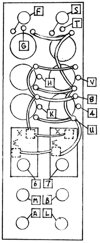

|
Dual Transient Generator
 USER TEST: Patch the TRIG IN jack to the red OUTPUT jack. The output should be a triangle wave of around 3000 Hz when the RISE and FALL time pots are turned all the way up. Turning the pots down will yield envelope shapes of varying rise and fall times to as low as 5 seconds each. With control voltage applied, this can be driven very much slower. Check for proper VC control.
|